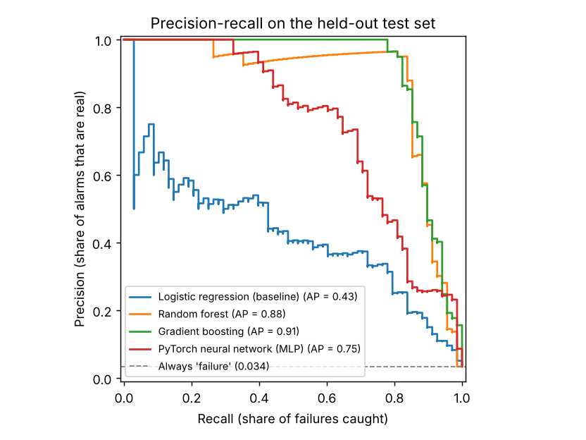
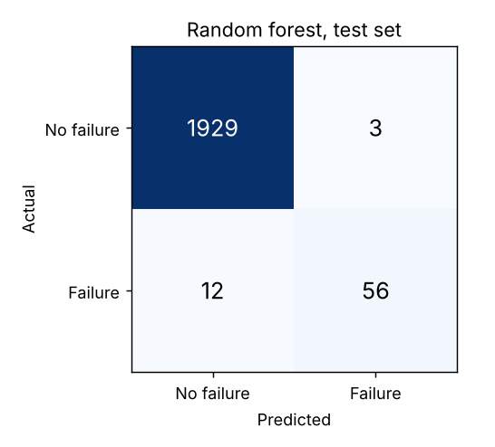
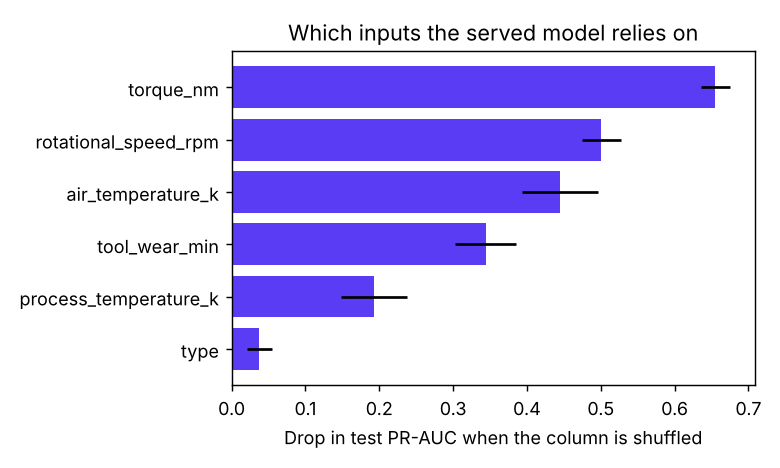

Machine Failure Predictor
Enter one sensor reading and get the probability that the machine fails. The model is trained on the public AI4I 2020 predictive-maintenance dataset (10,000 readings, 3.4% failures). The page calls a FastAPI service; the same API runs in Docker.
Prediction
Pick an example or enter values, then press Predict.
How the models compare
Stratified 5-fold cross-validation on 8,000 rows, then one score on a 2,000-row held-out test set. PR-AUC is the main metric because failures are rare. Each model's threshold is chosen from its cross-validation predictions, never from the test set. The live API serves the best scikit-learn model; the PyTorch network is too large for this host's serverless functions, so it is compared offline and in CI.
| Model | CV PR-AUC | Test PR-AUC | Test precision | Test recall |
|---|



Data: S. Matzka, AI4I 2020 Predictive Maintenance Dataset, UCI Machine Learning Repository, CC BY 4.0. It is synthetic data modelled on a real milling process, so these scores are not a claim about real machines. API docs: /docs. Code: github.com/Shreyashsalv2/machine-failure-predictor.